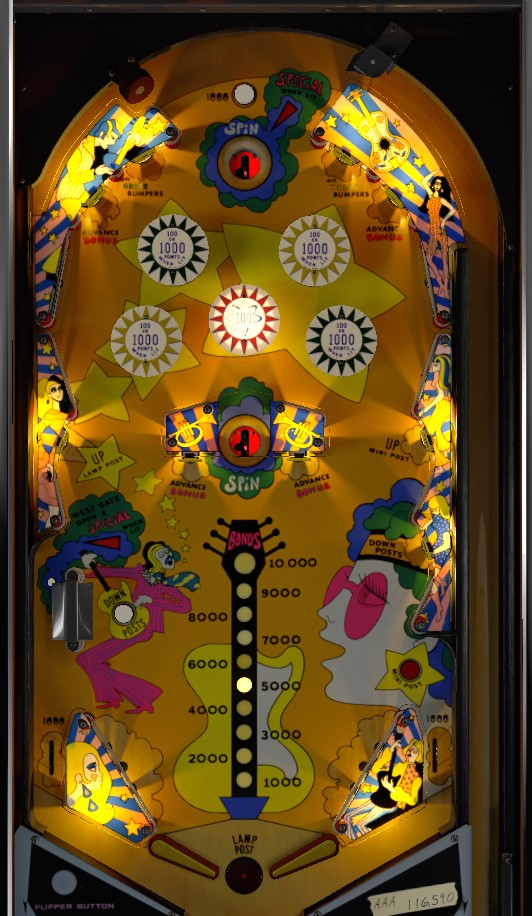

Jive Time is the replay version. Rock N Roll is the add-a-ball version. To my knowledge, the only difference is that Rock N Roll only allows Specials to be worth 100,000 points or an extra ball, while Jive Time also allows the possibility of a Special scoring a free game.
On the plunge, flop into the top saucer without hitting anything else for an instant special, especially if specials are set to score 100,000 points. The most consistent points and highest ceiling on the game come from lighting the bumpers and collecting as many 1,000 point pops as possible. The bonus is not an end-of-ball bonus; it is a jackpot-style reward given only if the ball lands in a saucer and the respective spin lands on Bonus or Double Bonus.
Landing in either saucer spins the big wheel on the backglass and awards the corresponding outcome. There are 10 wedges total. 2 wedges award 1,000 points; 2 wedges award 3,000 points; 2 wedges open the West Gate; 2 wedges score the Bonus; 1 wedge scores 10,000 points; 1 wedge scores double bonus. Most of these features are elaborated on throughout the guide.
At the start of every ball, the top saucer is lit for a special. Hitting any scoring switch in the game unlights the special. This special is available on every ball and is extremely important and helpful if specials score 100,000 points.
All upper standup targets score 1,000 points. The inner standup targets on each side light one colour of bumpers (yellow or green). The outer standup targets on each side advance the bonus. Yellow and green bumpers score 100 points, or 1,000 when lit. The center red bumper is always lit for 100 points.
The middle left standup target raises the center post between the flippers. The middle right standup target raises the mini post, which partially blocks the right out lane. The two center standup targets on either side of the center saucer advance the bonus. All score 1,000 points.
The left out lane extends upward, and is effectively double height. If the West Gate is open, a ball going through the top half of the "out lane" will be redirected back toward the flippers, and a special is scored. The gate does not close once used. It's pretty hard to end up in this lane on purpose.
There are no in lanes. Flippers back up directly to the slingshots. Full size three inch flippers are used. Out lanes always score 1,000 points. There is a center post that completely blocks off the center drain between the flippers and a mini post that partially blocks off the entrance to the right out lane. These are raised by standup targets on the outer edges of the playfield about halfway up, and lowered by the lower right standup target and the rollover button near the west gate.
Various standup targets around the playfield advance the bonus. The bonus is not awarded at the end of the ball; rather, it is a carryover jackpot that builds across balls and games, maxing out at 10,000 points. The only way to collect it is a spin of the backbox wheel that lands on Bonus or Double Bonus. Collecting the bonus resets it back to 1,000 points.